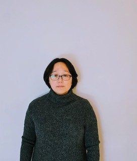

Hi. I'm a faculty member (tenure track) at Wright College, where I teach physics and engineering courses. I received my PhD in experimental particle physics from the University of Illinois at Chicago (UIC) in 2025.
My research interests include Higgs boson physics, searches for new physics, and the development of next-generation particle detectors.
As a member of the CMS Collaboration at the Large Hadron Collider (LHC), I worked on Higgs boson physics, including previous studies of Higgs boson decays to W boson pairs (H→WW). My current research focuses on Higgs boson decays to tau leptons (H→ττ).
I have also worked on machine learning and silicon detector development through the Smart Pixels Collaboration, contributing to the development of neural networks implemented directly on detector readout chips to reduce data volumes and enable new physics searches.
Previously, I worked on neutrino detector research as a member of the T2K and CAPTAIN collaborations. My contributions included studies of the T2K Pi-Zero Detector (P0D) in Japan and neutron beam measurements with the mini-CAPTAIN liquid argon time projection chamber (LArTPC) at Los Alamos National Laboratory (LANL).
Some recent initiatives I've been involved in:
Co-convenor of CMS ML Knowledge Group, 2024-25
Co-led a collaboration-wide machine learning knowledge working group within the CMS Collaboration, coordinating cross-institutional discussions, advising analysts on ML methodology and analysis strategy, and founding and editing the group's newsletter
Judge, NY Times Annual STEM Writing Contest, 2021-23
Reviewed and evaluated student submissions nationwide
Grand Judge, Regeneron Internationanl Science & Engineering Fair (ISEF), May 2022
Served as a Grand Awards Judge at the world's largest pre-college STEM competition, evaluating advanced research projects